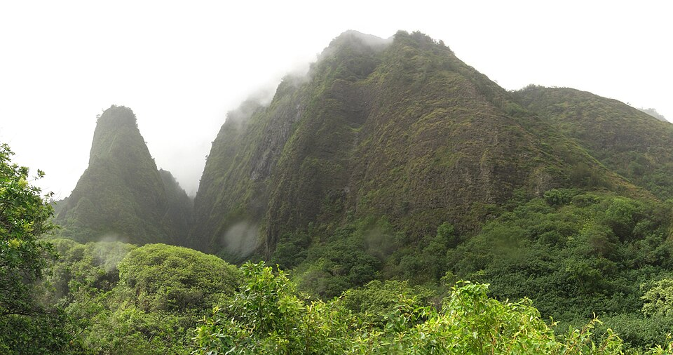

ʻĪao Valley
Place: ʻĪao Valley, West Maui
Type: Valley / sacred landscape / historical site
Story it tells: A valley of clouds, water, chiefly burials, and battle that has shaped Maui's history for centuries.

ʻĪao Valley is one of the most important cultural and historical landscapes in Hawaiʻi. The name ʻĪao is commonly translated as “supreme cloud” or “cloud supreme,” reflecting the valley's abundant rainfall and the cloud-covered slopes beneath Puʻu Kukui in the West Maui Mountains, traditionally known as Mauna Kahālāwai. Water flowing from these peaks feeds ʻĪao Stream which traverses through the valley into Wailuku and empties in the ocean near Paukūkaloo Beach.
Rising above the valley floor is Kūkaʻemoku, better known today as the ʻĪao Needle. This striking lava remnant towers above the surrounding landscape and is one of Maui's most recognizable landmarks. In Hawaiian tradition, Kūkaʻemoku was associated with Kanaloa (god of the Underworld and generally depicted as the ocean god), while the valley's waters, clouds, streams, and rainfall reflected the presence of Kāne (god of creation, fresh water, sky, and life). The needle also served as a lookout during times of conflict, giving strategic views across the valley.
For centuries, ʻĪao was regarded as a sacred and restricted place. Maui ruler Kakaʻe is believed to have designated the valley as an aliʻi burial ground in the late fifteenth century. High chiefs were interred in hidden caves along the steep valley walls, their locations closely guarded and often known only to a select few. Hawaiian traditions surrounding these burials emphasized secrecy and protection, helping preserve the mana (spiritual power) of the deceased. The valley remained kapu to most people except during Makahiki and became one of the most important chiefly burial areas in the islands.
In 1790, ʻĪao Valley became the site of the Battle of Kepaniwai, one of the bloodiest conflicts in Hawaiian history. During his campaign to unify the islands, Kamehameha I invaded Maui and confronted the forces of Maui chief Kalanikūpule (son of Kahekili). Supported by western firearms and cannons operated by John Young and Isaac Davis, Kamehameha's warriors eventually overwhelmed Maui's defenses. According to tradition, so many warriors died that their bodies dammed ʻĪao Stream, giving rise to the nearby name Kepaniwai, meaning “the damming of the waters.” A nearby park bears this name today.
Today, ʻĪao Valley State Monument is visited for its trails, rainforest, and views of the ʻĪao Needle. Its clouds, waters, sacred sites, chiefly burials, and historical associations continue to connect the landscape to centuries of Hawaiian history, spirituality, and memory.